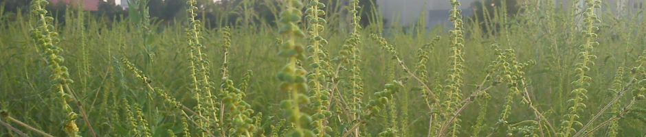

parlagfűről
A parlagfű irtását folyamatosan kell végezni. A növényt a virágzása előtt kell elpusztítani, hogy ne szórhasson virágport, és ne érlelhessen termést.
Gyomlálás: A virágzó parlagfű irtását ne bízzuk gyerekekre, mert az erős pollenkoncentráció a levegőben kiválthatja a lappangó allergiát. Kerülni kell a virágzó növény közvetlen érintését, mert az is allergiás reakciót válthat ki. Ilyenkor a kézi irtást kesztyűben kell végezni.
Kaszálás: A környezetet és a költségeket is leginkább kímélő eljárás. A fiatal növényeket tömeges megjelenésük után, minél előbb tanácsos kaszálni. A talajszinten a gyökérnyaki résznél kell a növény szárát elvágni. Ez a legbiztosabb módszer, mivel a növények nem tudnak újrahajtani. Ha ezzel elkéstünk, az egyszeri kaszálás már nem eredményezi a parlagfű kiirtását, mert a növény az alacsonyan elhelyezkedő oldalrügyeiből 3-4 oldalhajtást nevel, és pár hét múlva újra virágba borul. Általában három kaszálás biztosít megfelelő eredményt. Ha a háromszori kaszálás nem valósítható meg, úgy az egyszeri kaszálás a virágzást közvetlenül megelőző időszakban a leghatékonyabb.
Vegyszeres gyomirtás: A parlagfű terjedése gyomirtó szerek használata nélkül nem állítható meg. Azonban vegyszeres kezeléseket csak olyan helyen szabad alkalmazni, ahol ez embereket és főként gyermekeket semmilyen módon nem veszélyeztet. Az irtás a korai növekedési fázisban a hatleveles állapotáig hatásos. >
Életlehetőségeinek csökkentése: Mivel a parlagfű zárt növénytakaró mellett nem fejlődik, kiszorítható jól fejlődő növényzet telepítésével, és fűmagvetéssel, gyep telepítésével. A dús vegetáció mellett a parlagfű ki fog szorulni.